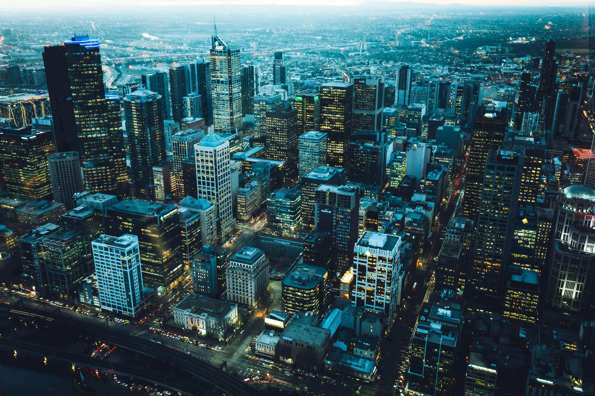
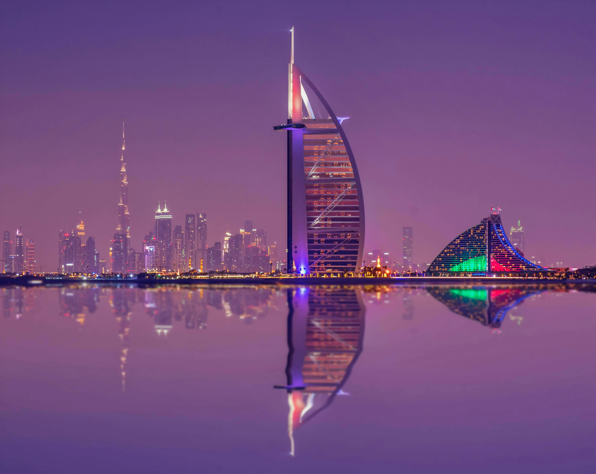
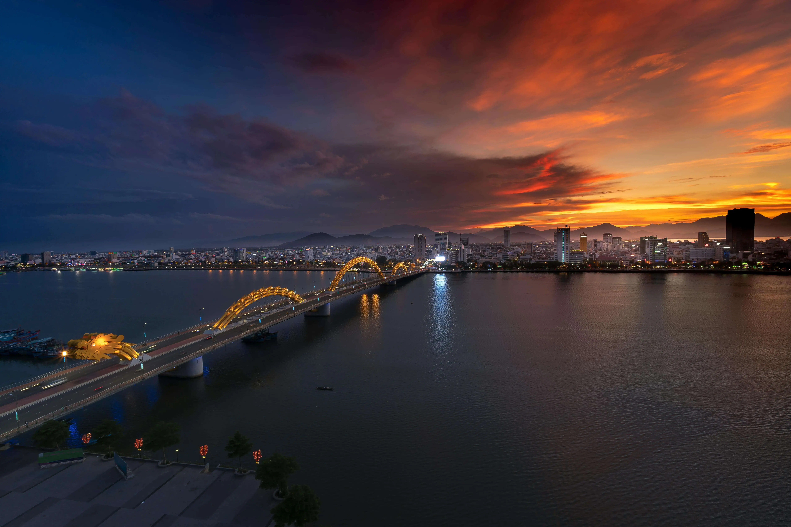

<section id="page-projects" class="page-section">
    <a href="#hero" class="btn-page-back" data-key="btn_back">← Geri</a>
    <h2 data-key="projects_title_featured">Öne Çıkan Projelerimiz</h2>
    
    <div class="project-grid">
      <div class="project-card">
        
        <h3 data-key="project_h3_residence">Konut</h3>
      </div>
      <div class="project-card">
        
        <h3 data-key="project_h3_commercial">Ticari</h3>
      </div>
      <div class="project-card">
        
        <h3 data-key="project_h3_multipurpose">Çok Amaçlı</h3>
      </div>
    </div>

    <h2 data-key="projects_title_latest" style="margin-top:60px;">Son Tamamlananlar</h2>
    <div class="latest-grid">
      <div class="latest-card">
         
        <h3 data-key="latest_h3_1">Modern Residence</h3>
      </div>
      <div class="latest-card">
        
        <h3 data-key="latest_h3_2">Commercial Hub</h3>
      </div>
    </div>
</section>
